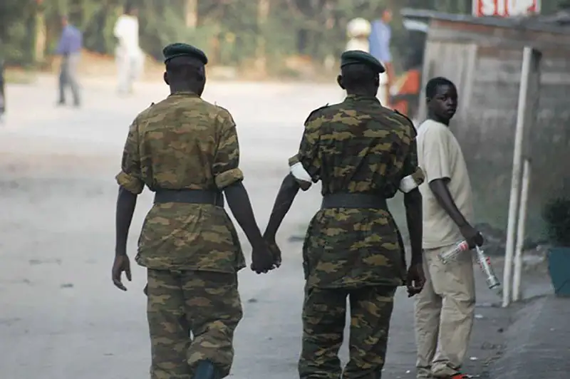
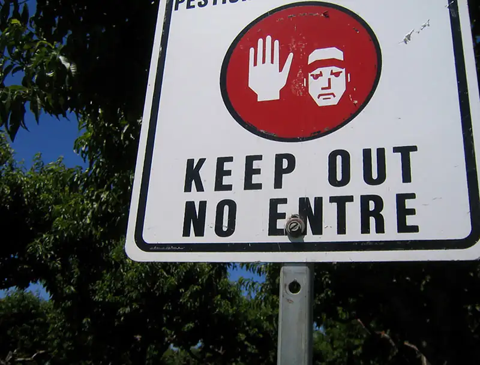
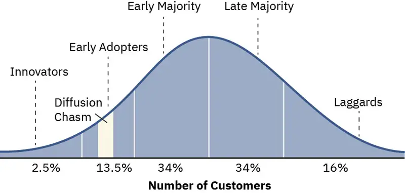

Chapter 3: Culture¶
Introduction¶
If you passed someone in a hallway, joined a video conference, or even called into a radio show, it’s likely you and the other people involved would exchange some version of the following question : “How are you?” One of you may ask the other. You may exchange a greeting and the question or one of its variants. Generally, we do not consider our responses to these acquaintances as rules. We simply say, “Hello!” and ask, “How was your weekend?” or some other trivial question meant to be a friendly greeting.
We all adhere to various rules, expectations, and standards that are created and maintained in our specific culture. These rules and expectations have meaning, and there are many ways by which the meanings can be misinterpreted or misunderstood. When we do not meet those expectations, we may receive some form of disapproval such as a look or comment informing us that we did something unacceptable.
Consider what would happen if you stopped and informed everyone who asked “Hi, how are you?” exactly how you were doing that day, and in detail. In U.S. society, you would violate norms of ‘greeting.’ Perhaps if you were in a different situation, such as having coffee with a good friend, that question might warrant a detailed response.
These examples are all aspects of culture, which is comprised of shared values (ideals), beliefs which strengthen the values, norms and rules that maintain the values, language so that the values can be taught, symbols that form the language people must learn, arts and artifacts, and the people’s collective identities and memories. Sociologically, we examine in which situation and context a certain behavior is expected and in which it is not. People who interact within a shared culture create and enforce these expectations. Sociologists examine these circumstances and search for patterns.
In everyday conversation, people in the U.S. rarely distinguish between the terms culture and society, but the terms have different meanings, and the distinction is important to a sociologist. A culture represents the values, beliefs, norms, language, symbols, and practices of a group, while society represents the people who share a culture. Neither society or culture could exist without the other.
Within the U.S., many groups of people share a community and a culture. By “community,” sociologists refer to a definable region of a society, real terra firma—as small as a neighborhood (Brooklyn, or “the east side of town”), as large as a country (Ethiopia, Nepal or the U.S.), or somewhere in between (in the U.S., this might include someone who identifies with Southern or Midwestern society).
In this chapter, we examine the relationship between culture and society in greater detail and pay special attention to the elements and forces that shape culture, including diversity and social changes. A final discussion examines the theoretical perspectives from which sociologists research culture.
3.1 What Is Culture?¶
Learning Objectives
By the end of this section, you should be able to:
- Differentiate between culture and society
- Explain material versus nonmaterial culture
- Discuss the concept of cultural universals as it relates to society
- Compare and contrast ethnocentrism and xenocentrism
Humans are social creatures. According to Smithsonian Institution research, humans have been forming groups for almost 3 million years in order to survive. Living together, people formed common habits and behaviors, from specific methods of childrearing to preferred techniques for obtaining food.
Almost every human behavior, from shopping to marriage, is learned. In the U.S., marriage is generally seen as an individual choice made by two adults, based on mutual feelings of love. In other nations and in other times, marriages have been arranged through an intricate process of interviews and negotiations between entire families. In Papua New Guinea, almost 30 percent of women marry before the age of 18, and 8 percent of men have more than one wife (National Statistical Office, 2019). To people who are not from such a culture, arranged marriages may seem to have risks of incompatibility or the absence of romantic love. But many people from cultures where marriages are arranged, which includes a number of highly populated and modern countries, often prefer the approach because it reduces stress and increases stability (Jankowiak 2021).
Being familiar with unwritten rules helps people feel secure and at ease. Knowing to look left instead of right for oncoming traffic while crossing the street can help avoid serious injury and even death. Knowing unwritten rules is also fundamental in understanding humor in different cultures. Humor is common to all societies, but what makes something funny is not. Americans may laugh at a scene in which an actor falls; in other cultures, falling is never funny. Most people want to live their daily lives confident that their behaviors will not be challenged or disrupted. But even an action as seemingly simple as commuting to work evidences a great deal of cultural propriety, that is, there are a lot of expected behaviors. And many interpretations of them.
Take the case of going to work on public transportation. Whether people are commuting in Egypt, Ireland, India, Japan, and the U.S., many behaviors will be the same and may reveal patterns. Others will be different. In many societies that enjoy public transportation, a passenger will find a marked bus stop or station, wait for the bus or train, pay an agent before or after boarding, and quietly take a seat if one is available. But when boarding a bus in Cairo, Egypt, passengers might board while the bus is moving, because buses often do not come to a full stop to take on patrons. In Dublin, Ireland, bus riders would be expected to extend an arm to indicate that they want the bus to stop for them. And when boarding a commuter train in Mumbai, India, passengers must squeeze into overstuffed cars amid a lot of pushing and shoving on the crowded platforms. That kind of behavior might be considered rude in other societies, but in Mumbai it reflects the daily challenges of getting around on a train system that is taxed to capacity.
Culture can be material or nonmaterial. Metro passes and bus tokens are part of material culture, as are the buses, subway cars, and the physical structures of the bus stop. Think of material culture as items you can touch-they are tangible. Nonmaterial culture, in contrast, consists of the ideas, attitudes, and beliefs of a society. These are things you cannot touch. They are intangible. You may believe that a line should be formed to enter the subway car or that other passengers should not stand so close to you. Those beliefs are intangible because they do not have physical properties and can be touched.
Material and nonmaterial aspects of culture are linked, and physical objects often symbolize cultural ideas. A metro pass is a material object, but it represents a form of nonmaterial culture, namely, capitalism, and the acceptance of paying for transportation. Clothing, hairstyles, and jewelry are part of material culture, but the appropriateness of wearing certain clothing for specific events reflects nonmaterial culture. A school building belongs to material culture symbolizing education, but the teaching methods and educational standards are part of education’s nonmaterial culture.
As people travel from different regions to entirely different parts of the world, certain material and nonmaterial aspects of culture become dramatically unfamiliar. What happens when we encounter different cultures? As we interact with cultures other than our own, we become more aware of the differences and commonalities between others and our own. If we keep our sociological imagination awake, we can begin to understand and accept the differences. Body language and hand gestures vary around the world, but some body language seems to be shared across cultures: When someone arrives home later than permitted, a parent or guardian meeting them at the door with crossed arms and a frown on their face means the same in Russia as it does in the U.S. as it does in Ghana.
Cultural Universals¶
Although cultures vary, they also share common elements. Cultural universals are patterns or traits that are globally common to all societies. One example of a cultural universal is the family unit: every human society recognizes a family structure that regulates sexual reproduction and the care of children. Even so, how that family unit is defined and how it functions vary. In many Asian cultures, for example, family members from all generations commonly live together in one household. In these cultures, young adults continue to live in the extended household family structure until they marry and join their spouse’s household, or they may remain and raise their nuclear family within the extended family’s homestead. In the U.S., by contrast, individuals are expected to leave home and live independently for a period before forming a family unit that consists of parents and their offspring. Other cultural universals include customs like funeral rites, weddings, and celebrations of births. However, each culture may view and conduct the ceremonies quite differently.
Anthropologist George Murdock first investigated the existence of cultural universals while studying systems of kinship around the world. Murdock found that cultural universals often revolve around basic human survival, such as finding food, clothing, and shelter, or around shared human experiences, such as birth and death or illness and healing. Through his research, Murdock identified other universals including language, the concept of personal names, and, interestingly, jokes. Humor seems to be a universal way to release tensions and create a sense of unity among people (Murdock, 1949). Sociologists consider humor necessary to human interaction because it helps individuals navigate otherwise tense situations.
Sociological Research: Is Music a Cultural Universal?
Imagine that you are sitting in a theater, watching a film. The movie opens with the protagonist sitting on a park bench with a grim expression on their face. The music starts to come in. The first slow and mournful notes play in a minor key. As the melody continues, the heroine turns her head and sees a man walking toward her. The music gets louder, and the sounds don’t seem to go together – as if the orchestra is intentionally playing the wrong notes. You tense up as you watch, almost hoping to stop. The character is clearly in danger.
Now imagine that you are watching the same movie – the exact same footage – but with a different soundtrack. As the scene opens, the music is soft and soothing, with a hint of sadness. You see the protagonist sitting on the park bench with a grim expression. Suddenly, the music swells. The woman looks up and sees a man walking toward her. The notes are high and bright, and the pace is bouncy. You feel your heart rise in your chest. This is a happy moment.
Music has the ability to evoke emotional responses. In television shows, movies, commercials, and even the background music in a store, music has a message and seems to easily draw a response from those who hear it – joy, sadness, fear, victory. Are these types of musical cues cultural universals?
In 2009, a team of psychologists, led by Thomas Fritz of the Max Planck Institute for Human Cognitive and Brain Sciences in Leipzig, Germany, studied people’s reactions to music that they’d never heard (Fritz et al., 2009). The research team traveled to Cameroon, Africa, and asked Mafa tribal members to listen to Western music. The tribe, isolated from Western culture, had never been exposed to Western culture and had no context or experience within which to interpret its music. Even so, as the tribal members listened to a Western piano piece, they were able to recognize three basic emotions: happiness, sadness, and fear. Music, the study suggested, is a sort of universal language.
Researchers also found that music can foster a sense of wholeness within a group. In fact, scientists who study the evolution of language have concluded that originally language (an established component of group identity) and music were one (Darwin, 1871). Additionally, since music is largely nonverbal, the sounds of music can cross societal boundaries more easily than words. Music allows people to make connections, where language might be a more difficult barricade. As Fritz and his team found, music and the emotions it conveys are cultural universals.
Ethnocentrism and Cultural Relativism¶
Although human societies have much in common, cultural differences are far more prevalent than cultural universals. For example, while all cultures have language, analysis of conversational etiquette reveals tremendous differences. In some Middle Eastern cultures, it is common to stand close to others in conversation. Americans keep more distance and maintain a large “personal space.” Additionally, behaviors as simple as eating and drinking vary greatly from culture to culture. Some cultures use tools to put the food in the mouth while others use their fingers. If your professor comes into an early morning class holding a mug of liquid, what do you assume they are drinking? In the U.S., it’s most likely filled with coffee, not Earl Grey tea, a favorite in England, or Yak Butter tea, a staple in Tibet.
Some travelers pride themselves on their willingness to try unfamiliar foods, like the late celebrated food writer Anthony Bourdain (1956-2017). Often, however, people express disgust at another culture's cuisine. They might think that it’s gross to eat raw meat from a donkey or parts of a rodent, while they don’t question their own habit of eating cows or pigs.
Such attitudes are examples of ethnocentrism, which means to evaluate and judge another culture based on one’s own cultural norms. Ethnocentrism is believing your group is the correct measuring standard and if other cultures do not measure up to it, they are wrong. As sociologist William Graham Sumner (1906) described the term, it is a belief or attitude that one’s own culture is better than all others. Almost everyone is a little bit ethnocentric.
A high level of appreciation for one’s own culture can be healthy. A shared sense of community pride, for example, connects people in a society. But ethnocentrism can lead to disdain or dislike of other cultures and could cause misunderstanding, stereotyping, and conflict. Individuals, government, non-government, private, and religious institutions with the best intentions sometimes travel to a society to “help” its people, because they see them as uneducated, backward, or even inferior. Cultural imperialism is the deliberate imposition of one’s own cultural values on another culture.
Colonial expansion by Portugal, Spain, Netherlands, and England grew quickly in the fifteenth century was accompanied by severe cultural imperialism. European colonizers often viewed the people in these new lands as uncultured savages who needed to adopt Catholic governance, Christianity, European dress, and other cultural practices.
A modern example of cultural imperialism may include the work of international aid agencies who introduce agricultural methods and plant species from developed countries into areas that are better served by indigenous varieties and agricultural approaches to the particular region. Another example would be the deforestation of the Amazon Basin as indigenous cultures lose land to timber corporations.
When people find themselves in a new culture, they may experience disorientation and frustration. In sociology, we call this culture shock. In addition to the traveler’s biological clock being ‘off’, a traveler from Chicago might find the nightly silence of rural Montana unsettling, not peaceful. Now, imagine that the ‘difference’ is cultural. An exchange student from China to the U.S. might be annoyed by the constant interruptions in class as other students ask questions—a practice that is considered rude in China. Perhaps the Chicago traveler was initially captivated with Montana’s quiet beauty and the Chinese student was originally excited to see a U.S.- style classroom firsthand. But as they experience unanticipated differences from their own culture, they may experience ethnocentrism as their excitement gives way to discomfort and doubts about how to behave appropriately in the new situation. According to many authors, international students studying in the U.S. report that there are personality traits and behaviors expected of them. Black African students report having to learn to ‘be Black in the U.S.’ and Chinese students report that they are naturally expected to be good at math. In African countries, people are identified by country or kin, not color. Eventually, as people learn more about a culture, they adapt to the new culture for a variety of reasons.
Culture shock may appear because people aren’t always expecting cultural differences. Anthropologist Ken Barger (1971) discovered this when he conducted a participatory observation in an Inuit community in the Canadian Arctic. Originally from Indiana, Barger hesitated when invited to join a local snowshoe race. He knew he would never hold his own against these experts. Sure enough, he finished last, to his mortification. But the tribal members congratulated him, saying, “You really tried!” In Barger’s own culture, he had learned to value victory. To the Inuit people, winning was enjoyable, but their culture valued survival skills essential to their environment: how hard someone tried could mean the difference between life and death. Over the course of his stay, Barger participated in caribou hunts, learned how to take shelter in winter storms, and sometimes went days with little or no food to share among tribal members. Trying hard and working together, two nonmaterial values, were indeed much more important than winning.
During his time with the Inuit tribe, Barger learned to engage in cultural relativism. Cultural relativism is the practice of assessing a culture by its own standards rather than viewing it through the lens of one’s own culture. Practicing cultural relativism requires an open mind and a willingness to consider, and even adapt to, new values, norms, and practices.
However, indiscriminately embracing everything about a new culture is not always possible. Even the most culturally relativist people from egalitarian societies—ones in which women have political rights and control over their own bodies—question whether the widespread practice of female genital mutilation in countries such as Ethiopia and Sudan should be accepted as a part of cultural tradition. Sociologists attempting to engage in cultural relativism, then, may struggle to reconcile aspects of their own culture with aspects of a culture that they are studying. Sociologists may take issue with the practices of female genital mutilation in many countries to ensure virginity at marriage just as some male sociologists might take issue with scarring of the flesh to show membership. Sociologists work diligently to keep personal biases out of research analysis.
Sometimes when people attempt to address feelings of ethnocentrism and develop cultural relativism, they swing too far to the other end of the spectrum. Xenocentrism is the opposite of ethnocentrism, and refers to the belief that another culture is superior to one’s own. (The Greek root word xeno-, pronounced “ZEE-no,” means “stranger” or “foreign guest.”) An exchange student who goes home after a semester abroad or a sociologist who returns from the field may find it difficult to associate with the values of their own culture after having experienced what they deem a more upright or nobler way of living. An opposite reaction is xenophobia, an irrational fear or hatred of different cultures.
Perhaps the greatest challenge for sociologists studying different cultures is the matter of keeping a perspective. It is impossible for anyone to overcome all cultural biases. The best we can do is strive to be aware of them. Pride in one’s own culture doesn’t have to lead to imposing its values or ideas on others. And an appreciation for another culture shouldn’t preclude individuals from studying it with a critical eye. This practice is perhaps the most difficult for all social scientists.
Sociology in the Real World: Overcoming Culture Shock
During her summer vacation, Caitlin flew from Chicago, Illinois to Madrid, Spain to visit Maria, the exchange student she had befriended the previous semester. In the airport, she heard rapid, musical Spanish being spoken all around her.
Exciting as it was, she felt isolated and disconnected. Maria’s mother kissed Caitlin on both cheeks when she greeted her. Her imposing father kept his distance. Caitlin was half asleep by the time supper was served—at 10 p.m. Maria’s family sat at the table for hours, speaking loudly, gesturing, and arguing about politics, a taboo dinner subject in Caitlin’s house. They served wine and toasted their honored guest. Caitlin had trouble interpreting her hosts’ facial expressions, and did not realize she should make the next toast. That night, Caitlin crawled into a strange bed, wishing she had not come. She missed her home and felt overwhelmed by the new customs, language, and surroundings. She’d studied Spanish in school for years—why hadn’t it prepared her for this?
What Caitlin did not realize was that people depend not only on spoken words but also on body language, like gestures and facial expressions, to communicate. Cultural norms and practices accompany even the smallest nonverbal signals (DuBois, 1951). They help people know when to shake hands, where to sit, how to converse, and even when to laugh. We relate to others through a shared set of cultural norms, and ordinarily, we take them for granted.
For this reason, culture shock is often associated with traveling abroad, although it can happen in one’s own country, state, or even hometown. Anthropologist Kalervo Oberg (1960) is credited with first coining the term “culture shock.” In his studies, Oberg found that most people are excited at first to encounter a new culture. But bit by bit, they become stressed by interacting with people from a different culture who speak another language and use different regional expressions. There is new food to digest, new daily schedules to follow, and new rules of etiquette to learn. Living with this constant stress can make people feel incompetent and insecure. People react to frustration in a new culture, Oberg found, by initially rejecting it and glorifying one’s own culture. An American visiting Italy might long for a “real” pizza or complain about the unsafe driving habits of Italians.
It helps to remember that culture is learned. Everyone is ethnocentric to an extent, and identifying with one’s own country is natural. Caitlin’s shock was minor compared to that of her friends Dayar and Mahlika, a Turkish couple living in married student housing on campus. And it was nothing like that of her classmate Sanai. Sanai had been forced to flee war-torn Bosnia with her family when she was fifteen. After two weeks in Spain, Caitlin had developed more compassion and understanding for what those people had gone through. She understood that adjusting to a new culture takes time. It can take weeks or months to recover from culture shock, and it can take years to fully adjust to living in a new culture.
By the end of Caitlin’s trip, she had made new lifelong friends. Caitlin stepped out of her comfort zone. She had learned a lot about Spain, but discovered a lot about herself and her own culture.
3.2 Elements of Culture¶
Learning Objectives
By the end of this section, you should be able to:
- Differentiate values, beliefs, and norms
- Explain the significance of symbols and language to a culture
- Explain the Sapir-Whorf hypothesis
- Discuss the role of social control within culture
Values and Beliefs¶
The first, and perhaps most crucial, elements of culture we will discuss are values and beliefs. Value does not mean monetary worth in sociology, but rather ideals, or principles and standards members of a culture hold in high regard. Most cultures in any society hold “knowledge” (education) in high regard. Values are deeply embedded and are critical for learning a culture’s beliefs, which are the tenets or convictions that people hold to be true. Individual cultures in a society have personal beliefs, but they also shared collective values. To illustrate the difference, U.S. citizens may believe in the American Dream—that anyone who works hard enough will be successful and wealthy. Underlying this belief is the American value that wealth is important. In other cultures, success may be tied less to wealth and more to having many healthy children. Values shape a society by suggesting what is good and bad, beautiful and ugly, sought or avoided.
Consider the value that the U.S. places upon youth. Children represent innocence and purity, while a youthful adult appearance signifies sexuality. Shaped by this value, individuals spend millions of dollars each year on cosmetic products and surgeries to look young and beautiful. The U.S. also has an individualistic culture, meaning people place a high value on individuality and independence. In contrast, many other cultures are collectivist, meaning the welfare of the group takes priority over that of the individual. Fulfilling a society’s values can be difficult. Marital monogamy is valued, but many spouses engage in infidelity. Cultural diversity and equal opportunities for all people are valued in the U.S., yet the country’s highest political offices have been dominated by white men.
Values often suggest how people should behave, but they don’t accurately reflect how people do behave. Values portray an ideal culture, the standards society would like to embrace and live up to. But ideal culture differs from real culture. In an ideal culture, there would be no traffic accidents, murders, poverty, or racial tension. But in real culture, police officers, lawmakers, educators, and social workers constantly strive to prevent or address these issues. American teenagers are encouraged to value celibacy. However, the number of unplanned pregnancies among teens reveals that the ideal alone is not enough to spare teenagers the potential consequences of having sex.
One of the ways societies strive to maintain its values is through rewards and punishments. When people observe the norms of society and uphold its values, they are often rewarded. A boy who helps an elderly woman board a bus may receive a smile and a “thank you.” A business manager who raises profit margins may receive a quarterly bonus. People sanction unwanted or inappropriate behaviors by withholding support, approval, or permission, or by implementing sanctions. We may think of ‘sanction’ as a negative term, but sanctions are forms of social control, ways to encourage conformity to cultural norms or rules. Sometimes people conform to norms in anticipation or expectation of positive sanctions. Receiving good grades, for instance, may mean praise from parents and teachers. Sanctions can also be negative. . A boy who shoves an elderly woman aside to board the bus first may receive frowns or even a scolding from other passengers. A business manager who drives away customers will likely be fired. Breaking norms and rejecting values can lead to cultural sanctions such as earning a negative label like ‘lazy’ or to legal sanctions, such as traffic tickets, fines, or imprisonment. Utilizing social control encourages most people to conform regardless of whether authority figures (such as law enforcement) are present.
Values are not static. They change across time and between groups as people evaluate, debate, and change collective social beliefs. Values also vary from culture to culture. For example, cultures differ in their values about what kinds of physical closeness are appropriate in public. It’s rare to see two male friends or coworkers holding hands in the U.S. where that behavior often symbolizes romantic feelings. But in many nations, masculine physical intimacy is considered natural in public. This difference in cultural values came to light when people reacted to photos of former president G.W. Bush holding hands with the Crown Prince of Saudi Arabia in 2005. Simple gestures, such as hand-holding, carry great symbolic differences across cultures.

Norms¶
So far, many of the examples in this chapter have described how people are expected to behave in certain situations—for example, buying food or boarding a bus. These examples describe the visible and invisible rules of conduct through which societies are structured, or what sociologists call norms. Norms are behaviors that reflect compliance with what cultures and societies have defined as good, right, and important. Most members adhere to them.
Formal norms are established, written rules existing in all societies. They support many social institutions, such as the military, criminal justice and healthcare systems, and public schools. Functionalists may question what purpose these norms serve, conflict theorists might be interested in who creates, benefits, and suffers under these formal norms, and symbolic interactionists wonder about how a group that benefits interacts. Laws are formal norms, but so are employee manuals, college entrance exam requirements, and “no running” signs at swimming pools. Formal norms are the most specific and clearly stated of the various types of norms, and they are the most strictly enforced. But they are enforced to varying degrees.
For example, private property is highly valued in the U.S. Thieves can be fined, imprisoned, or both. People safeguard valuable possessions by locking their doors, buying a safe, and installing alarm systems on homes and cars. A less strictly enforced social norm is driving while intoxicated. While it’s against the law to drive drunk, drinking is for the most part an acceptable social behavior. And though there are laws to punish drunk driving, there are few systems in place to prevent the crime.
There are plenty of formal norms, but the list of informal norms—casual behaviors that are generally and widely conformed to—is longer. People learn informal norms by observation, imitation, and general socialization. Some informal norms are taught directly— “Kiss your Aunt Edna” or “Use your napkin”—while others are learned by observation, including understanding consequences when someone else violates a norm. Informal norms dictate appropriate behaviors without the need of written rules and so may be difficult to learn when you are new to or not familiar with the culture.
Although informal norms define personal interactions, they extend into other systems as well. In the U.S., there are informal norms regarding behavior at fast food restaurants. Customers line up to order their food and leave when they are done. They don’t sit down at a table with strangers, sing loudly as they prepare their condiments, or nap in a booth. Most people don’t commit even harmless breaches of informal norms.
Sociological Research: Breaching Experiments
Sociologist Harold Garfinkel (1917–2011) studied people’s customs in order to find out how societal rules and norms not only influence behavior but also shape social order. He believed that members of society together create a social order (Weber, 2011). His resulting book, Studies in Ethno-methodology (1967) discusses people’s assumptions about the social makeup of their communities.
One of Garfinkel’s research methods was known as a “breaching experiment,” in which the researcher behaves in a socially awkward manner in order to test the sociological concepts of social norms and conformity. The participants are not aware an experiment is in progress, but their response is recorded. For example, if the experimenter is, say, a man in a business suit, and he skips down the sidewalk or hops on one foot, a passersby is likely to stare at him with surprised expressions. But the experimenter does not simply “act weird” in public. Rather, the point is to deviate from a specific social norm in a small way, to subtly break some form of social etiquette, and see what happens.
For example, he set up a simple game of tic-tac-toe. One player was asked beforehand to mark Xs and Os not in the boxes but on the lines dividing the spaces instead. The other player, in the dark about the study, was flabbergasted and did not know how to continue. The second player’s outrage, anger, puzzlement, or other emotion suggested that cultural norms had been violated.
There are many rules about speaking with strangers in public. It is okay to tell a woman you like her shoes. It is not okay to ask if you can try them on. It is okay to stand in line behind someone at the ATM. It is not okay to look over his shoulder as he makes a transaction. It is okay to sit beside someone on a crowded bus. It’s weird to sit beside a stranger in a half-empty bus.
For some breaches, the researcher directly engages with innocent bystanders. An experimenter might strike up a conversation in a public bathroom, where it’s common to respect each other’s privacy. In a grocery store, an experimenter might take a food item out of another person’s grocery cart, saying, “That looks good! I think I’ll try it.” An experimenter might sit down at a table with others in a fast-food restaurant or follow someone around a museum and study the same paintings. In those cases, the bystanders are pressured to respond, and their discomfort illustrates how much we depend on social norms. Breaching experiments uncover and explore the many unwritten social rules we live by.
Norms may be further classified as either mores or folkways. Mores (mor-ays) are norms that embody the moral views and principles of a group. They often have a religious foundation. Violating them can have serious consequences. The strongest mores are protected with laws and other formal sanctions. In most societies, for instance, homicide is considered immoral, and it’s punishable by law (a formal norm). But more often, mores are judged and guarded by public sentiment (an informal norm). People who violate mores are seen as shameful. They can even be shunned or banned from some groups.
The mores of the U.S. school system require that a student’s writing be in the student’s own words or use special forms (such as quotation marks and a whole system of citation) for crediting other writers. Submitting or publishing another person’s words as if they are one’s own has a name—plagiarism. The consequences for violating this norm are often severe and can result in expulsion from school or termination from employment.
Unlike mores, folkways are norms without any moral underpinnings. Rather, folkways direct appropriate behavior in the day-to-day practices and expressions of a culture. We can think of them as ‘traditions’—things we do because we ‘always have.’ They indicate whether to shake hands or kiss on the cheek when greeting another person. They specify whether to wear a tie and blazer or a T-shirt and sandals to an event. In Canada, women can smile and say hello to men on the street. In Egypt, that’s not acceptable. In regions in the southern U.S., bumping into an acquaintance means stopping to chat. It’s considered rude not to, no matter how busy one is. In other regions, people guard their privacy and value time efficiency. A simple nod of the head is enough. Other accepted folkways in the U.S. may include holding the door open for a stranger or giving someone a gift on their birthday. The rules regarding these folkways may change from culture to culture. A folkway in one culture could be extremely rude in another.
Folkways are actions that people everywhere take for granted. People need to act without thinking in order to get seamlessly through daily routines. They can’t stop and analyze every action (Sumner, 1906). Folkways might be small actions, learned by observation and imitated, but they are by no means trivial. An important folkway in many cultures is kissing Grandmother on the cheek. Fail to do so and you will likely be scolded.
Symbols and Culture¶
Humans, consciously and subconsciously, are always striving to make sense of their surrounding world. Symbols—such as gestures, signs, objects, signals, and words—help people understand that world. They provide communication methods to understanding experiences by conveying recognizable meanings that are shared by societies.
The world is filled with symbols. Sports uniforms, company logos, and traffic signs are symbols. In some cultures, a gold ring is a symbol of marriage. Some symbols are highly functional; stop signs, for instance, provide useful instruction. As physical objects, they belong to material culture, but because they function as symbols, they also convey nonmaterial cultural meanings. Some symbols are valuable only in what they represent. Trophies, blue ribbons, or gold medals, for example, represent accomplishments. But many objects have both material and nonmaterial symbolic value.
Symbols often get noticed when they are out of context. Used unconventionally, they convey strong messages. A stop sign placed on the door of a college building makes a political statement, as does a camouflage military jacket worn in an antiwar protest. Together, the semaphore signals for “N” and “D” represent nuclear disarmament—and form the well-known peace sign (Westcott, 2008). Some college students wear pajamas and bedroom slippers to class, clothing that was formerly associated only with privacy and bedtime. By wearing the outfit, students are defying traditional cultural norms.
Some symbols represent only one side of the story and elicit strong emotions, which can lead to social unrest. Their presence is a reminder of a nation’s worst times and not something to celebrate. Many of these symbols are targets of vandalism as the destruction of these representations is symbolic. Effigies representing public figures are burned to demonstrate anger at certain leaders. In 1989, crowds tore down the Berlin Wall, a decades-old symbol of the division between East and West Germany, communism, and capitalism. In the U.S. beginning in 2019, statues associated with slavery and the Civil War were removed from state capitols, college campuses, and public parks. In Germany, any display of Hitler or Nazi memorabilia or to deny the Holocaust is illegal.
While different cultures have varying systems of symbols, one system is common to all: language. Whatever its form, people learn social and cultural norms through it.
Language and Symbols¶
Language is a system that uses symbols with which people communicate and through which culture is transmitted. Letters (which make up words), pictographs, and hand gestures are all symbols that create a language used for communication. Sign language, for example, requires an intimate knowledge not only of an alphabet but also of signs that represent entire words and the meaning indicated by certain facial expressions or postures. Its grammar differs from the spoken language. As spoken language is different across regions, nations and cultures, and can even differ by the age of the person, so too does sign language.
All language systems contain the same basic elements that are effective in communicating ideas - object, subject, action. A written language system consists of symbols that refer to spoken sound. Taken together, these symbols convey specific meanings. The English language uses a combination of twenty-six letters to create words. These twenty-six letters make up over 600,000 recognized words (OED Online, 2011). We can compare the reliance on tone and inflection to Mandarin Chinese. It contains over 8,000 characters, but the same character may symbolize different concepts depending on the tone used.
English today contains an English and French version for the same concept. For example, in the English version, one eats, but in French version, one dines. In the English version, we meet someone. In the French version, we encounter someone. Readers of American English may be surprised by the inclusion of a ‘u’ in some spellings of words like ‘behaviour’ or ‘flavour.’ Americans have dropped that ‘u’ that writers of British English include. Billions of people speak English, and there are almost as many pronunciations of it.
Rules for speaking and writing vary even within cultures, most notably by region. Do you eat a grinder, a sub, or a hero/gyro? Do you refer to a can of carbonated liquid as “soda” or “pop”? Is a household entertainment room a “family room,” “rec room,” or “den”? When leaving a restaurant, do you ask your server for a “check,” the “ticket,” or your “bill”? Language is constantly evolving and adding new words as societies create new ideas. In this age of technology, many cultures have adapted almost instantly to new nouns such as “e-mail” and “Internet,” and verbs such as “downloading,” “texting,” and “blogging.” These would have been considered nonsense words in the world just twenty-five years ago.
Language and Culture¶
Even while it constantly evolves, language shapes our perception of reality and our behavior. In the 1920s, linguists Edward Sapir and Benjamin Whorf advanced this idea which became known as Sapir-Whorf hypothesis or linguistic relativity. It is based on the idea that people experience their world through their language, and therefore understand their world through the cultural meanings embedded in their language. The hypothesis suggests that language shapes thought and thus behavior (Swoyer, 2003). For example, words have attached meanings beyond their definition that can influence thought and behavior. In the U.S. where the number thirteen is associated with bad luck, many high-rise buildings do not have a 13th floor. In Japan, however, the number four is considered unlucky, since it is pronounced similarly to the Japanese word for “death.”
Many sociologists believe that language can have a broad and lasting impact on perception. In 2002, Lera Boroditsky and her colleagues conducted experiments on native German and Spanish speakers in English. Unlike English, these languages assign genders to nouns. In German, for example, the word for sun, die Sonne, is feminine, but the word for moon, der Mond, is masculine. The team chose a set of nouns with opposite genders in German and Spanish and asked participants to provide adjectives to describe them. They found that German speakers used more masculine adjectives than Spanish speakers when describing a noun that was grammatically masculine in German but feminine in Spanish. For example, the word for key is masculine in German and feminine in Spanish. German speakers described keys as hard, heavy, jagged, metal, serrated, and useful, while Spanish speakers used the adjectives, golden, intricate, little, lovely, shiny, and tiny. The team concluded that gender perceptions acquired in a person’s native language carry forward to how they see the world even when they switch to a language without grammatical genders (Boroditsky, Schmidt, and Phillips, 2002).
Some sociologists also believe the structure of language can have consequences on both individual and group behavior. For example, a series of studies have found that Finland has a significantly higher rate of workplace accidents than Sweden despite the fact that the languages have similar workplace regulations (Salminen & Johansson, 2000). John A. Lucy explained this discrepancy through differences in the structure of these languages. Swedish places a greater emphasis on the timing of movement in three-dimensional space. Consequently, Lucy argued, the Swedish factories are physically arranged in a manner that supports the smooth running of the product process. Finnish factors experience frequent disruptions, so that workers must rush and have more accidents (Lucy, 1997).
The Sapir-Whorf hypothesis has been interpreted to suggest that if a word does not exist in a language then users of that language cannot have the experience. Studies have shown, for instance, that unless people have access to the word “ambivalent,” they don’t recognize having conflicting positive and negative feelings about an issue as ‘ambivalence.’ However, the hypothesis should not suggest that people do not have conflicting feelings but rather that they interpret the feelings differently.
In addition to using spoken language, people communicate without words. Nonverbal communication is symbolic, and, as in the case of language, is learned through one’s culture. Some gestures are nearly universal; some are not. Smiles often indicate positive reinforcement in the U.S., whereas in some cultures it is rude as you do not know the person. A thumbs-up in Russia and Australia is an offensive curse (Passero, 2002). Other gestures vary in meaning depending on the situation and the person. A wave of the hand can mean many things, depending on how it’s done and for whom. It may mean “hello,” “goodbye,” “no thank you,” or “I’m royalty.” Winks convey a variety of messages, including “We have a secret,” “I’m only kidding,” or “I’m attracted to you.” From a distance, a person may “read” the emotional situation of people just by watching their body language and facial expressions. However, many cultures communicate with lots of physicality, which people outside that culture may interpret as an argument. So, for example, you might believe two people are arguing when, in fact, they are simply having a regular conversation.
Social Policy and Debate: Is the U.S. Bilingual?
When she was six, Lucy and her family immigrated to the United States and attended a school that allowed for the use of both English and Spanish. Lucy’s teacher and many staff were bilingual (fluent in English and Spanish), and the district offered books in both languages. While she was being driven to learn English, the dual-language option helped to ensure that she did not become lost and get behind in her learning of all subjects. Having math, science, and computing taught in both languages helped her understand those concepts and skills. Within two years of enrolling in the school, Lucy was getting nearly all of her instruction in English, and rarely used the Spanish-language books or resources. While she still had trouble with some intricacies of English, her math progress was above grade level and she did well in other subjects as well.
Some people might believe that Lucy would have learned faster had she been instructed only in English. But research indicates that is not the case. Johns Hopkins University researchers conducted a series of studies on the effects of bilingual education across multiple subjects (Slavin et al. 2008). They found that students taught in both their native tongue and English make better progress than those taught only in English.
Legally, the U.S. has no official language. But many believe English to be the rightful language of the U.S., and over thirty states have passed laws specifying English as their official tongue. Proponents of English-only laws suggest that a national ruling will save money on translation, printing, and human resource costs, including funding for bilingual teachers. They argue that setting English as the official language will encourage non-English speakers to learn English faster and adapt to the culture of the U.S. more easily (Mount 2010). Groups such as the American Civil Liberties Union (ACLU) oppose making English the official language and claim that it violates the rights of non-English speakers. English-only laws, they believe, deny the reality of our nation’s diversity and unfairly target non-English speakers. They point to the fact that much of the debate on this topic has risen since 1970, a period during which the U.S. has experienced new waves of immigration from Asia and Mexico.
Today, a lot of product information gets written in multiple languages. Enter a store like Home Depot and you’ll find signs in both English and Spanish. Buy a children’s product and the safety warnings could be presented in multiple languages. While marketers are financially motivated to reach the largest number of consumers possible, this trend also may help people become accustomed to a culture of bilingualism.
Studies show that most US immigrants eventually abandon their native tongues and become fluent in English. Bilingual education helps with that transition. Today, Lucy is an ambitious and high-achieving college student. Fluent in both English and Spanish, Lucy is studying law enforcement—a field that seeks bilingual employees. The same bilingualism that contributed to her success in grade school will help her thrive professionally as a law officer serving her community.

3.3 High, Low, Pop, Sub, Counter-culture and Cultural Change¶
Learning Objectives
By the end of this section, you should be able to:
- Discuss the roles of both high culture and pop culture within society
- Differentiate between subculture and counterculture
- Explain the role of innovation, invention, and discovery in culture
- Describe the role of cultural lag and globalization in cultural change
It may seem obvious that there are a multitude of cultural differences between societies in the world. After all, we can easily see that people vary from one society to the next. It’s natural to think that a young woman from a village in rural Kenya in Eastern Africa would have a different view of the world from a young woman from urban Mumbai, India—one of the most populated cities in the world.
Additionally, each culture has its own internal variations. Sometimes the differences between cultures are not as large as the differences within cultures. Sociologist Pierre Bourdieu wrote about cultural capital, which consists of material goods, non-material attitudes, and knowledge that are specific to a certain economic class. Bourdieu grouped cultural capital into three categories: embodied (a regional dialect), objectified (possessions), and institutionalized (academic credentials). In the U.S., some group culture into three categories as well: high, low, and pop (for popular).
High, Low, and Popular Culture¶
Can you identify the Chief Financial Officer of three major corporations? How about the name of the server at three local hangouts? How many books do you own? How many social media sites do you visit? Is your family listed on the Social Register©? Have you ever heard of the Social Register©? In each pair, one type of knowledge is considered high culture and the other low culture.
This could be considered stereotyping by economic class rather than by race or gender, but sociologists use the term high culture to describe the pattern of cultural experiences and attitudes that exist in the highest or elite class segments of a society. People often associate high culture with intellectualism, political power, and prestige. In America, high culture also tends to be associated with wealth. Events considered high culture can be expensive, formal, and exclusive – attending a ballet, seeing a play, listening to a live symphony performance, or attending a prestigious university. Similarly, low culture is associated with the pattern of cultural experiences and attitudes that exist in the lowest class segments of a society.
The term popular culture refers to the pattern of cultural experiences and attitudes that exist in mainstream society. Popular culture events might include a parade, a baseball game, or the season finale of a television show. Music, anime, and cosplay are pieces of popular culture. Popular culture is accessible by most and is expressed and spread via commercial and social media outlets such as radio, television, movies, the music industry, publishers, and corporate-run websites. You can share a discussion of favorite football teams with a new coworker or comment on a reality show when making small talk in line at the grocery store. But if you tried to launch into a deep discussion on the classical Greek play Antigone, few members of U.S. society today would be familiar with it. Although high culture may be considered by some as superior to popular culture, the lines between high culture and popular culture vary over time and place. Shakespearean plays, considered to be popular culture when they were written, are now part of our society’s high culture. Five hundred years from now, will our descendants consider Dancing with the Stars as fine performance art?
Subculture and Counterculture¶
A subculture is just what it sounds like—a smaller cultural group within a larger culture. People of a subculture are part of the larger culture but also share a specific identity within a smaller group.*
Thousands of subcultures exist within the U.S. Ethnic and racial groups share the language, food, and customs of their heritage. Other subcultures are formed through shared experiences. Biker culture revolves around an interest in motorcycles. Some subcultures are formed by people who possess traits or preferences that differ from the majority of a society’s population. The body modification community embraces aesthetic additions to the human body, such as tattoos, piercings, and certain forms of plastic surgery. But even as members of a subculture band together, they still identify with and participate in the larger society.
Sociologists distinguish subcultures from countercultures, which reject some of the larger culture’s norms and values. In contrast to subcultures, which operate relatively smoothly within the larger society, countercultures might actively defy larger society by developing their own set of rules and norms to live by, sometimes even creating communities that operate outside of greater society. Counterculture members are ‘against’ the dominant ruling culture and want to install their own values. Sub-culture members may want to change some things but established procedures are followed.
Cults, a word derived from culture, are also considered counterculture groups. The group “Yearning for Zion” (YFZ) in Eldorado, Texas, existed outside the mainstream and the limelight, until its leader was accused of statutory rape and underage marriage. The sect’s formal norms clashed too severely to be tolerated by US law, and in 2008, authorities raided the compound and removed more than two hundred women and children from the property. Many cults claim to be spiritual, often establishing themselves as a religion. When each of the three Abrahamic religions (Christianity, Islam, and Judaism) in the world began, they were treated as cults and suffered much oppression because of it.
Cultural Change¶
Cultures continually change because new items are added to material culture every day and in turn, meanings are assigned to them (non-material), which affects other cultural components. For example, a new technology, such as railroads or smartphones, might introduce new ways of traveling or communicating. New ideas, such as flash mobs or crowdfunding, enter a culture . Sociologists identify two broad categories of change as innovation (meaning new) and diffusion (to spread out). Material cultural change happens when new items are discovered or invented or enter a culture as a result of globalization.
Innovation: Discovery and Invention¶
An innovation refers to an object or concept’s initial appearance in society—it is innovative because it is new. Innovations are discovered or invented. Discoveries make known previously unknown but existing aspects of reality. In 1610, when Galileo discovered Saturn's rings with a telescope, (though he incorrectly guessed they were two moons on either side of the planet), the planet's rings were already there, but until then, no one had known about them. When Christopher Columbus encountered Hispaniola, the island was, of course, already well known to its inhabitants. However, his discovery was new knowledge for Europeans, and it opened the way to changes in European culture, as well as to the cultures of the discovered lands. For example, new foods such as potatoes and tomatoes transformed the European diet, and horses brought from Europe changed hunting practices of Great Plains Native Americans.
Inventions result when something new is formed from existing objects or concepts—when things are put together in an entirely new manner. In the late 1800s and early 1900s, electric appliances were invented at an astonishing pace. Cars, airplanes, vacuum cleaners, lamps, radios, telephones, and televisions were all new inventions. Inventions may shape a culture by replacing older ways of carrying out tasks, being integrated into current practices, or creating new activities. Their adoption reflects (and may shape) cultural values, and their use may introduce new norms and practices.
Consider the rise of mobile phones. As more and more people began carrying these devices, phone conversations no longer were restricted to homes, offices, and phone booths. People on trains, in restaurants, and in other public places became annoyed by listening to one-sided conversations. New norms and behaviors were needed for cell phone use. Some people pushed for the idea that those who are out in the world should pay attention to their companions and surroundings. Fortunately, technology found a workaround: texting, which enables quiet communication surpassed phone conversations as the primary way to communicate anywhere, everywhere.
When the pace of innovation increases, it can lead to generation gaps. Technological gadgets that catch on quickly with one generation are sometimes dismissed by an older generation that is skeptical or struggles to adopt them. The older generation might tune into a musician performing on public television while the younger generation prefers a livestream. A culture’s objects and ideas can cause not just generational but cultural gaps. Material culture tends to diffuse more quickly than nonmaterial culture; technology can spread through society in a matter of months, but it can take generations for the ideas and beliefs of society to change including methods for researching or learning information (e.g., library versus Internet search).

Coined by sociologist William F. Ogburn (1957), the term culture lag refers to the time that passes between the introduction of a new item of material culture and its social acceptance. Culture lag can also cause tangible problems. The infrastructure of the U.S., built a hundred years ago or more, is having trouble supporting today’s more heavily populated and fast-paced life. Yet there is a lag in conceptualizing solutions to infrastructure problems. Municipalities struggle with traffic control, increased air pollution, and limited parking, which are all symptoms of culture lag. Although people are becoming aware of the consequences, overuse, or lack of resources, addressing these needs takes time.
Diffusion and Globalization¶
Another way material and nonmaterial culture crosses borders is through diffusion. Like a gas in a laboratory experiment, the item or idea spreads throughout. Diffusion relates to the process of the integration of cultures into the mainstream while globalization refers to the promotion and increase of interactions between different regions and populations around the globe resulting in the integration of markets and interdependence of nations fostered through trade.
Ideas concepts, or artifacts are often diffused, or spread, to individuals and groups, resulting in new social practices. People might develop a new appreciation of Thai noodles or Italian gelato (ice cream). Access to television and the Internet has brought the lifestyles and values portrayed in U.S. sitcoms into homes around the globe and vice versa. Twitter feeds from public demonstrations in one nation have encouraged political protesters in other countries. When this kind of diffusion occurs, ideas from one culture are introduced into another, often before the associated material objects. The graph above displays when diffusion typically occurs, essentially driving an innovation to spread beyond its earliest adopters to the wider majority of people.
3.4 Theoretical Perspectives on Culture¶
Learning Objectives
By the end of this section you should be able to:
- Discuss the major theoretical approaches to cultural interpretation
Music, fashion, technology, and values—all are products of culture. But what do they mean? How do sociologists perceive and interpret culture based on these material and nonmaterial items? Let’s finish our analysis of culture by reviewing them in the context of three theoretical perspectives: functionalism, conflict theory, and symbolic interactionism.
Functionalists view society as a system in which all parts work—or function—together to create society as a whole. They often use the human body as an analogy. Looking at life in this way, societies need culture to exist. Cultural norms function to support the fluid operation of society, and cultural values guide people in making choices. Just as members of a society work together to fulfill a society’s needs, culture exists to meet its members’ social and personal needs.
Functionalists also study culture in terms of values. For example, education is highly valued in the U.S. The culture of education—including material culture such as classrooms, textbooks, libraries, educational technology, dormitories and non-material culture such as specific teaching approaches—demonstrates how much emphasis is placed on the value of educating a society’s members. In contrast, if education consisted of only providing guidelines and some study material without the other elements, that would demonstrate that the culture places a lower value on education.
Functionalists view the different categories of culture as serving many functions. Having membership in a culture, a subculture, or a counterculture brings camaraderie and social cohesion and benefits the larger society by providing places for people who share similar ideas.
Conflict theorists, however, view social structure as inherently unequal, based on power differentials related to issues like class, gender, race, and age. For a conflict theorist, established educational methods are seen as reinforcing the dominant societal culture and issues of privilege. The historical experiences of certain groups— those based upon race, sex, or class, for instance, or those that portray a negative narrative about the dominant culture—are excluded from history books. For a long time, U.S. History education omitted the assaults on Native American people and society that were part of the colonization of the land that became the United States. A more recent example is the recognition of historical events like race riots and racially based massacres like the Tulsa Massacre, which was widely reported when it occurred in 1921 but was omitted from many national historical accounts of that period of time. When an episode of HBO’s Watchmen showcased the event in stunning and horrific detail, many people expressed surprise that it had occurred and it hadn’t been taught or discussed (Ware 2019).
Historical omission is not restricted to the U.S. North Korean students learn of their benevolent leader without information about his mistreatment of large portions of the population. According to defectors and North Korea experts, while famines and dire economic conditions are obvious, state media and educational agencies work to ensure that North Koreans do not understand how different their country is from others (Jacobs 2019).
Inequities exist within a culture’s value system and become embedded in laws, policies, and procedures. This inclusion leads to the oppression of the powerless by the powerful. A society’s cultural norms benefit some people but hurt others. Women were not allowed to vote in the U.S. until 1920, making it hard for them to get laws passed that protected their rights in the home and in the workplace. Same-sex couples were denied the right to marry in the U.S. until 2015. Elsewhere around the world, same-sex marriage is only legal in 31 of the planet’s 195 countries.
At the core of conflict theory is the effect of economic production and materialism. Dependence on technology in rich nations versus a lack of technology and education in poor nations. Conflict theorists believe that a society’s system of material production has an effect on the rest of culture. People who have less power also have fewer opportunities to adapt to cultural change. This view contrasts with the perspective of functionalism. Where functionalists would see the purpose of culture—traditions, folkways, values—as helping individuals navigate through life and societies run smoothly, conflict theorists examine socio-cultural struggles, including the power and privilege created for some by using and reinforcing a dominant culture that sustains their position in society.
Symbolic interactionism is the sociological perspective that is most concerned with the face-to-face interactions and cultural meanings between members of society. It is considered a micro-level analysis. Instead of looking at how access is different between the rich and poor, interactionists see culture as being created and maintained by the ways people interact and in how individuals interpret each other’s actions. In this perspective, people perpetuate cultural ways. Proponents of this theory conceptualize human interaction as a continuous process of deriving meaning from both objects in the environment and the actions of others. Every object and action has a symbolic meaning, and language serves as a means for people to represent and communicate interpretations of these meanings to others. Symbolic interactionists perceive culture as highly dynamic and fluid, as it is dependent on how meaning is interpreted and how individuals interact when conveying these meanings. Interactionists research changes in language. They study additions and deletions of words, the changing meaning of words, and the transmission of words in an original language into different ones.
We began this chapter by asking, “What is culture?” Culture is comprised of values, beliefs, norms, language, practices, and artifacts of a society. Because culture is learned, it includes how people think and express themselves. While we may like to consider ourselves individuals, we must acknowledge the impact of culture on us and our way of life. We inherit language that shapes our perceptions and patterned behavior, including those of family, friends, faith, and politics.
To an extent, culture is a social comfort. After all, sharing a similar culture with others is precisely what defines societies. Nations would not exist if people did not coexist culturally. There could be no societies if people did not share heritage and language, and civilization would cease to function if people did not agree on similar values and systems of social control.
Culture is preserved through transmission from one generation to the next, but it also evolves through processes of innovation, discovery, and cultural diffusion. As such, cultures are social constructions. The society approves or disapproves of items or ideas, which are therefore included or not in the culture. We may be restricted by the confines of our own culture, but as humans we have the ability to question values and make conscious decisions. No better evidence of this freedom exists than the amount of cultural diversity around the world. The more we study another culture, the better we become at understanding our own.
Chapter Review¶
Key Terms¶
- beliefs
- tenets or convictions that people hold to be true
- countercultures
- groups that reject and oppose society’s widely accepted cultural patterns
- cultural universals
- patterns or traits that are globally common to all societies
- culture
- shared beliefs, values, and practices
- culture lag
- the gap of time between the introduction of material culture and nonmaterial culture’s acceptance of it
- diffusion
- the spread of material and nonmaterial culture from one culture to another
- discoveries
- things and ideas found from what already exists
- ethnocentrism
- the evaluation and judgment of another culture based on one’s own cultural norms
- folkways
- direct, appropriate behavior in the day-to-day practices and expressions of a culture
- formal norms
- established, written rules
- globalization
- the integration of international trade and finance markets
- high culture
- the cultural patterns of a society’s elite
- ideal culture
- the standards a society would like to embrace and live up to
- informal norms
- casual behaviors that are generally and widely conformed to
- innovations
- new objects or ideas introduced to culture for the first time
- inventions
- a combination of pieces of existing reality into new forms
- language
- a symbolic system of communication
- mores
- the moral views and principles of a group
- norms
- the visible and invisible rules of conduct through which societies are structured
- popular culture
- mainstream, widespread patterns among a society’s population
- real culture
- the way society really is based on what actually occurs and exists
- sanctions
- a way to authorize or formally disapprove of certain behaviors
- Sapir-Whorf hypothesis
- the way that people understand the world based on their form of language
- social control
- a way to encourage conformity to cultural norms
- society
- people who live in a definable community and who share a culture
- subcultures
- groups that share a specific identification, apart from a society’s majority, even as the members exist within a larger society
- symbols
- gestures or objects that have meanings associated with them that are recognized by people who share a culture
- values
- a culture’s standard for discerning what is good and just in society
Summary¶
3.1 What Is Culture?¶
Though “society” and “culture” are often used interchangeably, they have different meanings. A society is a group of people sharing a community and culture. The term culture generally describes the shared values, beliefs, norms, language, practices, and artifacts of these people, and includes material and nonmaterial elements. Our experience of cultural difference is influenced by our ethnocentrism (judging others using your cultural standards) and Xenocentrism (belief that another culture is superior). Sociologists practice cultural relativism (assessing others using their own cultural standards) although it is quite difficult.
3.2 Elements of Culture¶
A culture consists of many elements, such as the values and beliefs of its society. Culture is also governed by norms, including laws, mores (norms that embody moral views), and folkways (traditions without any moral underpinnings). The symbols and language of a society are key to developing and conveying culture. In a nutshell, the four main components are values, beliefs, norms, language, practices, and artifacts.
3.3 High, Low, Pop, Sub, Counter-culture and Cultural Change¶
Sociologists recognize that there is a dominant culture or cultural practice that is dominant often characterized as the norm in a society as well as different types of cultures within societies. Societies also consist of many subcultures (a smaller cultural group within a larger culture). Some arise as a result of a shared identity or interest. Countercultures reject the dominant culture’s values and create their own cultural rules and norms. Cultural change can happen through invention or discovery. Cultures evolve via new ideas and new ways of thinking. In many modern cultures, the cornerstone of innovation is technology, the rapid growth of which can lead to cultural lag (time from creation or introduction to social acceptance). Technology is also responsible for the spread of both material and nonmaterial culture that contributes to globalization (the increase of movement and exchange of goods and ideas all over the planet).
3.4 Theoretical Perspectives on Culture¶
There are three major theoretical approaches toward the interpretation of culture. A functionalist perspective acknowledges that the many parts of culture work together as a system to fulfill society’s needs. Functionalists view culture as a reflection of society’s values. Conflict theorists see culture as inherently unequal, reinforcing inequalities in gender, class, race, and age. Symbolic interactionists are primarily interested in culture as experienced in the daily interactions, interpretations, and exchanges between individuals and the symbols that comprise a culture. Various cultural and sociological occurrences can be explained by these theories. Each theory provides a different perspective or lens to help understand culture in societies.
Section Quiz¶
3.1 What Is Culture?¶
1. The terms _______ and ______ are often used interchangeably, but have nuances that differentiate them.
- imperialism and relativism
- culture and society
- society and ethnocentrism
- ethnocentrism and Xenocentrism
Answer
B
2. The American flag is a material object that denotes the U.S. However, many associate ideas with the flag, like bravery and freedom. In this example, what are bravery and freedom?
- Symbols
- Language
- Material culture
- Nonmaterial culture
Answer
B
3. The belief that one’s culture is inferior to another culture is called:
- ethnocentrism
- nationalism
- xenocentrism
- imperialism
Answer
C
4. The irrational fear or hatred of another culture is called:
- ethnocentrism
- xenophobia
- xenophile
- ethnophobia
Answer
D
5. Rodney and Elise are U.S. students studying abroad in Italy. When they are introduced to their host families, the families kiss them on both cheeks. When Rodney’s host brother introduces himself and kisses Rodney on both cheeks, Rodney pulls back in surprise. Where he is from, unless they are romantically involved, men do not kiss one another. This is an example of:
- culture shock
- imperialism
- ethnocentrism
- xenocentrism
Answer
A
6. Most cultures have been found to identify laughter as a sign of humor, joy, or pleasure. Laughter is an examples of:
- relativism
- ethnocentrism
- xenocentrism
- universalism
Answer
D
3.2 Elements of Culture¶
7. A nation’s flag is:
- A symbol
- A value
- A culture
- A folkway
Answer
A
8. The existence of social norms, both formal and informal, is one of the main things that inform ___________, otherwise known as encouraging social conformity.
- values
- sanctions
- social control
- mores
Answer
C
9. The biggest difference between mores and folkways is that
- mores are linked to morality, whereas folkways are tied to commonplace behaviors
- mores are absolute, whereas folkways are temporary
- mores refer to material culture, whereas folkways refer to nonmaterial culture
- mores refer to nonmaterial culture, whereas folkways refer to material culture
Answer
A
10. The notion that people cannot feel or experience something that they do not have a word for can be explained by:
- linguistics
- Sapir-Whorf hypothesis
- Ethnographic imagery
- bilingualism
Answer
B
11. Cultural sanctions can also be viewed as ways that society:
- Establishes leaders
- Determines language
- Regulates behavior
- Determines laws
Answer
C
3.3 High, Low, Pop, Sub, Counter-culture and Cultural Change¶
12. An example of high culture is _________, whereas an example of popular culture would be ____________.
- Dostoevsky style in film; “American Idol” winners
- medical marijuana; film noir
- country music; pop music
- political theory; sociological theory
Answer
A
13. The Ku Klux Klan is an example of what part of culture?
- Counterculture
- Subculture
- Multiculturalism
- pop culture
Answer
A
14. Modern-day hipsters are an example of:
- ethnocentricity
- counterculture
- subculture
- high culture
Answer
C
15. Your eighty-three-year-old grandmother has been using a computer for some time now. As a way to keep in touch, you frequently send emails of a few lines to let her know about your day. She calls after every email to respond point by point, but she has never emailed a response back. This can be viewed as an example of:
- cultural lag
- Sapir-Whorf hypothesis
- Ethnographic imagery
- bilingualism
Answer
A
16. Some jobs today advertise in multinational markets and permit telecommuting in lieu of working from a primary location. This broadening of the job market and the way that jobs are performed can be attributed to:
- cultural lag
- diffusion
- discovery
- globalization
Answer
D
17. The major difference between invention and discovery is:
- Invention is based on technology, whereas discovery is usually based on culture
- Discovery involves finding items that already exists, but invention puts things together in a new way
- Invention refers to material culture, whereas discovery can be material or theoretic, like laws of physics
- Invention is typically used to refer to prehistoric objects, whereas discovery refers to local culture
Answer
B
18. McDonald’s restaurants are found in almost every country around the world. What is this an example of?
- globalization
- diffusion
- culture lag
- xenocentrism
Answer
B
3.4 Theoretical Perspectives on Culture¶
19. A sociologist conducts research into the ways that Hispanic American students are historically underprivileged in the U.S. education system. What theoretical approach is the sociologist Using?
- Symbolic interactionism
- Functionalism
- Conflict theory
- Ethnocentrism
Answer
C
20. Members of a counterculture movement believed that the economic disparity between the highest and the mid to lower economic classes is growing at an exponentially alarming rate. A sociologist who studies that movement by examining the interactions between its members would most likely use what theoretical approach?
- Symbolic interactionism
- Functionalism
- Conflict theory
- Ethnocentrism
Answer
A
21. What theoretical perspective views society as having a system of interdependent inherently connected parts?
- Sociobiology
- Functionalism
- Conflict theory
- Ethnocentrism
Answer
B
22. The “American Dream”—the notion that anybody can be successful and rich if they work hard enough—is most commonly associated with which sociological theory?
- Sociobiology
- Functionalism
- Conflict theory
- Ethnocentrism
Answer
C
Short Answer¶
3.1 What Is Culture?¶
23. Examine the difference between material and nonmaterial culture in your world. Identify ten objects that are part of your regular cultural experience. For each, then identify what aspects of nonmaterial culture (values, beliefs, norms, language, and practices) that these objects represent. What has this exercise revealed to you about your culture?
24. Do you believe that feelings of ethnocentricity or xenocentric attitudes and practices are prevalent in U.S. culture? Why do you believe this? What issues or events might influence your ideas about these concepts?
3.2 Elements of Culture¶
25. What do you think of the Sapir-Whorf hypothesis? Do you agree or disagree with it? Cite examples or research to support your point of view.
26. How would the elimination of a social “norm” influence your culture? Describe the positive and negative effects.
3.3 High, Low, Pop, Sub, Counter-culture and Cultural Change¶
27. Identify several examples of popular culture and describe how they form societal culture. How prevalent is the effect of these examples in your everyday life?
28. Consider some of the specific issues or concerns of your generation. Are any ideas or concepts countercultural? What subcultures have emerged from your generation? How have the issues of your generation expressed themselves culturally? How has your generation made its mark on society’s collective culture?
29. What are some examples of cultural lag that are present in your life? What influence does technology have on culture? Explain.
3.4 Theoretical Perspectives on Culture¶
30. Consider a current social trend that you have witnessed, perhaps situated around family, education, transportation, or finances. For example, many veterans of the Armed Forces, after completing tours of duty in the Middle East, are returning to college rather than entering jobs as previous generations did. Choose a sociological approach—functionalism, conflict theory, or symbolic interactionism—to describe, explain, and analyze the social issue you choose. Afterward, determine why you chose the approach you did. Does it suit your own way of thinking? Or does it offer the most relevant method of illuminating the social issue?
Further Research¶
3.1 What Is Culture?¶
Ethnocentrism is a problem in many arenas. In the workplace, it can be hurtful and detrimental to an entire organization and especially to those who face mistreatment or feel unwelcome. People who exhibit ethnocentrism in the workplace are not only putting their careers at risk, but missing opportunities to flourish and advance with colleagues and customers of different backgrounds. In other words, curbing ethnocentrism is an important personal and societal goal, and it’s important for careers. This guide from an executive leadership academy discusses ways that multicultural teams can create more success if the people and company undertake the correct practices.
3.2 Elements of Culture¶
The science-fiction novel, Babel-17, by Samuel R. Delaney was based upon the principles of the Sapir-Whorf hypothesis. Read an excerpt from Babel-17 here.
3.3 High, Low, Pop, Sub, Counter-culture and Cultural Change¶
Many people believe that the time of the counterculture is over. Like many aspects of culture, it could come back at any time. In this interview, Princeton professor German Labrador and director of exhibitions at the Centre de Cultura Contemporània de Barcelona discuss the past, present, and potential future of counterculture.
References¶
References
3.1 What Is Culture?
Amazon.com. 2020. Search for Humor Studies. “1-16 of over 40,000 results for Books : “humor studies””. Retrieved October 6, 2020. (Amazon.com)
Barger, Ken. 2008. “Ethnocentrism.” Indiana University, July 1. Retrieved May 2, 2011 (http://www.iupui.edu/~anthkb/ethnocen.htm).
Darwin, Charles R. 1871. The Descent of Man, and Selection in Relation to Sex. London: John Murray.
DuBois, Cora. 1951. “Culture Shock.” Presentation to Panel Discussion at the First Midwest Regional Meeting of the Institute of International Education.” November 28. Also presented to the Women’s Club of Rio de Janeiro, Brazil, August 3, 1954.
Fritz, Thomas, S and Jentschke, N. Gosselin, et al. 2009. “Universal Recognition of Three Basic Emotions in Music.” Current Biology 19(7).
Jankowiak, William and Nelson, Alex. 2021. “Does Love Always Come Before Marriage.” Sapiens.org. February 11, 2021. (https://www.sapiens.org/culture/love-and-marriage)
Murdock, George P. 1949. Social Structure. New York: Macmillan.
National Statistical Office (NSO) [Papua New Guinea] and ICF. 2019. Papua New Guinea Demographic and Health Survey 2016-18. Port Moresby, Papua New Guinea, and Rockville, Maryland, USA: NSO and ICF. Retrieved https://dhsprogram.com/publications/publication-fr364-dhs-final-reports.cfm.
Oberg, Kalervo. 1960. “Cultural Shock: Adjustment to New Cultural Environments.” Practical Anthropology 7:177–182.
Old Dominion University. ‘Journal of International Students’. Accessed October 16, 2020. (https://www.ojed.org/index.php/jis/index)
Smithsonian Institution. Natural History Museum. What does it mean to be human? Retrieved October 6, 2020. (https://humanorigins.si.edu/human-characteristics/social-life)
Sumner, William G. 1906. Folkways: A Study of the Sociological Importance of Usages, Manners, Customs, Mores, and Morals. New York: Ginn and Co.
Swoyer, Chris. 2003. “The Linguistic Relativity Hypothesis.” In The Stanford Encyclopedia of Philosophy, edited by E. N. Zalta, Winter. Retrieved May 5, 2011 (http://plato.stanford.edu/archives/win2003/entries/davidson/)
3.2 Elements of Culture
Boroditsky, Lera & Schmidt, Lauren. (2000). Sex, Syntax, and Semantics. Proceedings of the 22nd Annual Meeting of the Cognitive Science Society.
Eberhard, David M., Gary F. Simons, and Charles D. Fennig (eds.). 2020. Ethnologue: Languages of the World. Twenty-Third edition. Dallas, Texas: SIL International. Online version http://www.ethnologue.com
Lucy, J. (1997). Linguistic Relativity. Annual Review of Anthropology, 26, 291-312. Retrieved January 31, 2021, from http://www.jstor.org/stable/2952524
Mount, Steve. 2010. “Constitutional Topic: Official Language.” USConstitution.net, last modified January 24. Retrieved January 3, 2012 (http://www.USconstitution.net/consttop_lang.html).
National WWII Museum. 2020. “American Indian Code Talkers”. New Orleans, LA. Retrieved October 11, 2020. (https://www.nationalww2mUSeum.org/war/articles/american-indian-code-talkers).
OED Online. 2011. Oxford University Press. Retrieved May 5, 2011 (http://www.oed.com/view/Entry/260911).
Passero, Kathy. 2002. “Global Travel Expert Roger Axtell Explains Why.” Biography July:70–73,97–98.
Salminen S, Johansson A. Occupational accidents of Finnish- and Swedish-speaking workers in Finland: a mental model view. Int J Occup Saf Ergon. 2000;6(2):293-306. doi: 10.1080/10803548.2000.11076456. PMID: 10927671
Slavin, R. E., A. Cheung, C. Groff, and C. Lake. 2008. “Effective Reading Programs for Middle and High Schools: A Best-Evidence Synthesis.” Reading Research Quarterly 43(3):290–322.
Sumner, William G. 1906. Folkways: A Study of the Sociological Importance of Usages, Manners, Customs, Mores, and Morals. New York: Ginn and Co.
Swoyer, Chris. 2003. “The Linguistic Relativity Hypothesis.” In The Stanford Encyclopedia of Philosophy, edited by E. N. Zalta, Winter. Retrieved May 5, 2011 (http://plato.stanford.edu/archives/win2003/entries/relativism/supplement2.html).
Vaughan, R. M. 2007. “Cairo’s Man Show.” Utne Reader March–April:94–95.
Weber, Bruce. 2001. “Harold Garfinkel, a Common-Sense Sociologist, Dies at 93.” The New York Times, May 3. Retrieved February 10, 2012 (http://www.nytimes.com/2011/05/04/US/04garfinkel.html?_r=2)
Westcott, Kathryn. 2008. “World’s Best-Known Protest Symbol Turns 50.” BBC News, March 20. Retrieved January 3, 2012 (http://news.bbc.co.uk/2/hi/uk_news/magazine/7292252.stm).
Weston, J. (Director). (2002). Wild Child: The Story of Feral Children [Motion Picture].
3.3 High, Low, Pop, Sub, Counter-culture and Cultural Change
Ogburn, William F. 1957. “Cultural Lag as Theory.” Sociology & Social Research 41(3):167–174.
Scheuerman, William. 2010. “Globalization.” The Stanford Encyclopedia of Philosophy, edited by E. N.
Zalta, Summer. Retrieved February 10, 2012 (http://plato.stanford.edu/archives/sum2010/entries/globalization/).
Social Register Association. 2020. New York. https://www.socialregisteronline.com/
3.4 Theoretical Perspectives on Culture
Jacobs, Harrison. 2019. “North Koreans understand their government lies, but there’s one thing they don’t know, according to a defector.” Business Insider. (https://www.businessinsider.com/what-north-koreans-dont-understand-about-world-defector-news-2018-6)
Ware, Lawrence. 2019. “Watchmen’s Tulsa Massacre Is American History. It’s Also Mine.” Slate. October 25 2019. (https://slate.com/culture/2019/10/watchmen-tulsa-massacre-history-tv.html)
Adapted from Introduction to Sociology 3e by OpenStax, licensed under CC BY 4.0. Access the original for free at openstax.org. Changes: converted to the web reading format of The Open Book Project.